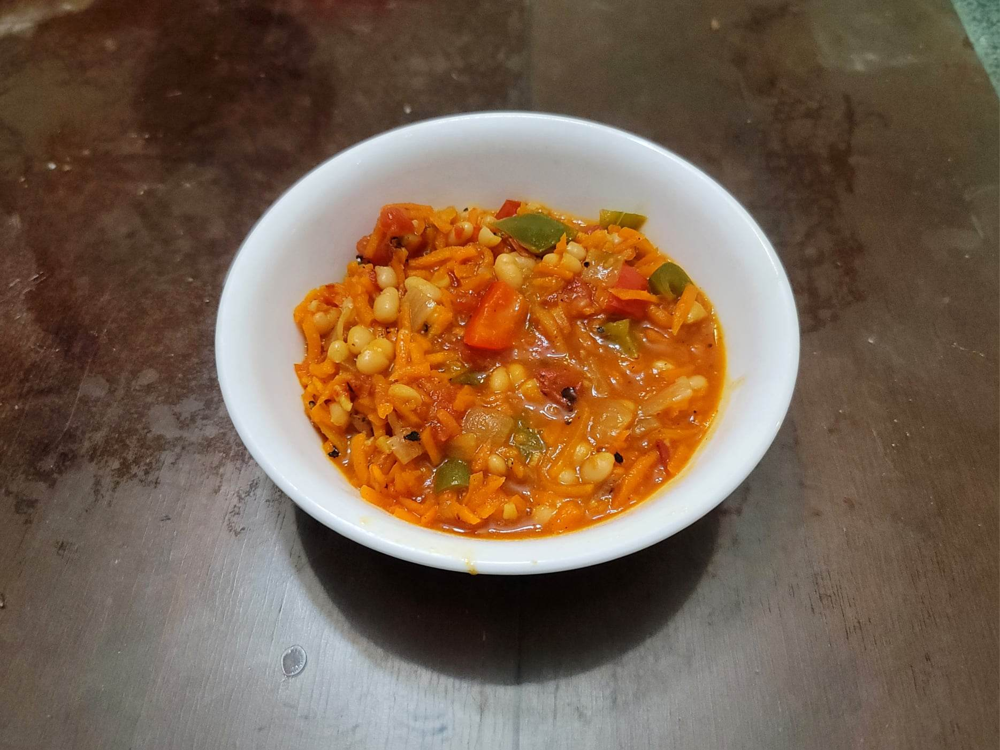

Chakalaka

Ingredients:
- 3 tbsp Vegetable Oil
- 1 Red onion, diced
- 3 cloves Garlic, minced
- 1/2 inch Ginger, grated
- 2 tsp Curry powder
- 1 Red bell pepper, diced
- 1 Green bell pepper, diced
- 4 medium-large Carrots, grated or julienned
- 1 14 oz can Diced tomatoes
- Salt, to taste
- Black pepper, to taste
- 1/4 - 1/2 tsp Red chili flakes
- 1 15 oz can Baked beans in tomato sauce
Instructions:
- Heat the oil in a saucepan over medium heat. Add the onion and sauté until translucent, 5-7 minutes. Then add in the garlic, ginger, and curry powder and sauté for 1-2 minutes.
- Add in the carrots and sauté for about another 1-2 minutes. Then add the tomatoes and stir to combine. Bring to a simmer and cook, covered for 5-10 minutes or until the mixture has thickened.
- Stir in the baked beans, chili flakes, salt, and pepper and cook for another 5 minutes.
- Taste and adjust salt and pepper as needed. Serve immediately.